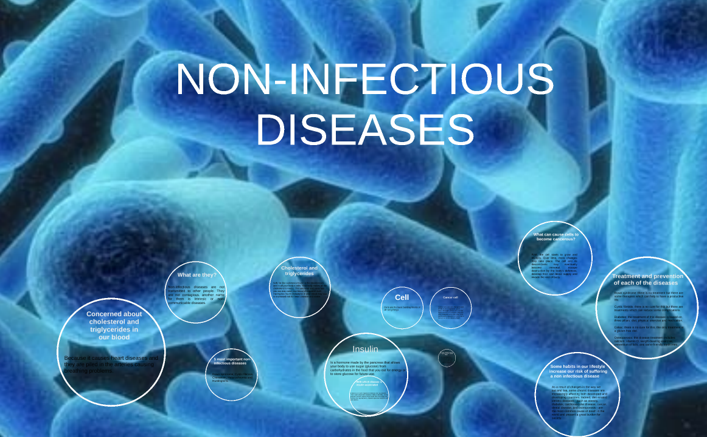
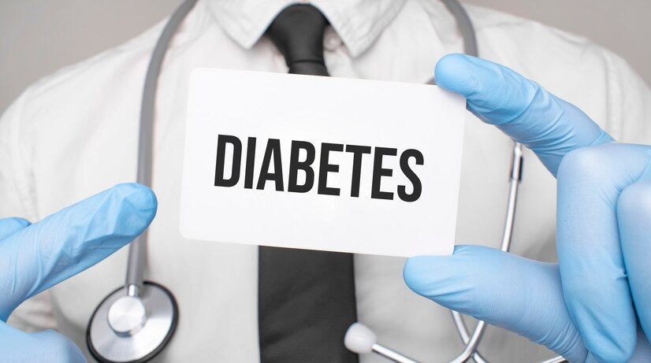
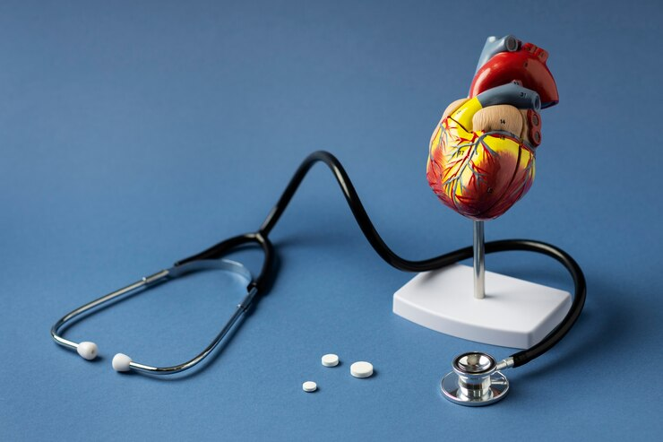

Non Infectious Diseases

Non-infectious diseases, often referred to as non-communicable diseases (NCDs), are a diverse group of medical conditions that are not caused by infectious agents such as bacteria, viruses, or parasites. Instead, they typically result from various factors, including genetic predisposition, lifestyle choices, environmental influences, and underlying metabolic or physiological imbalances.
Here are some common non infectious diseases:
1) Cancer
The process of development of cancer is called oncogenic transformation.
Cancer cells divide continuously to give rise to mass of cells (tumor).
Tumor caused by abnormal and uncontrolled cell division.
Tumor are of 2 types -
- Benign Tumor:-
Remain confined to their original location and do not spread.
- Malignant tumor:-
Cells divides and invades new locations by getting transported through blood to distant sites.
Metastasis: Property of malignant tumor to invade the distant body parts, thereby initiating formation of new tumors.
Causes of cancer:-
- Carcinogens - Physical, chemical, and biological
agents that cause cancer Example - ionizing radiations (X-rays and gamma rays), non-ionizing radiations (UV).
- Oncogenic (cancer-causing) viruses - They have viral oncogenes (cancer-causing genes).
- Sometimes normal genes in our body called protooncogenes get converted into cellular oncogenes that cause cancer.
Diagnosing cancer:-
- Biopsy - Suspected tissue is cut into thin sections and examined microscopically.
- Radiography-CT scan (computed tomography), and MRI (Magnetic resonance imaging) are techniques of diagnosing cancers.
- CT Scan-3-D imaging of internals of an organ is generated by X-rays.
- MRI Scan - Pathological and physiological changes in a living tissue are detected by using magnetic fields and non-ionizing radiations.
- Immunological and molecular biological diagnostic techniques can all be used to detect cancers.
- Identifying certain genes, which make an individual susceptible to cancers, can help to prevent cancers.
Treatment of Cancer:-
- Radiotherapy - Tumor cells are - irradiated to death. Also, proper care is taken for protecting surrounding normal tissues.
- Chemotherapy - Drugs specific for particular tumors are used to kill cancer cells. They have side effects such as hair loss, anemia, etc.
- Immunotherapy- Biological response modifiers such as a- interferons are used. They activate the immune system of patient and helps in destroying the tumor.
- Surgical- Surgical Cancerous tissues are surgically removed.
Symptoms of Cancer:-
- Weight loss
- Fever
- Fatigue
- Pain
- Skin color changes
- Loss of Appetite
- Nausea
Prevention of Cancer:-
- Don't use tobacco.
- Eat a healthy diet.
- Maintain a healthy weight and be physically active.
- Get regular medical care.
2) Diabetes

Diabetes is a chronic medical condition that affects how your body regulates blood sugar, also known as glucose. There are primarily two types of diabetes:
- Type 1 Diabetes: This is an autoimmune condition where the immune system attacks and destroys the insulin-producing cells in the pancreas. It often develops in childhood or adolescence and requires lifelong insulin treatment.
- Type 2 Diabetes: This is more common and is often linked to lifestyle factors, such as poor diet and lack of exercise. In type 2 diabetes, your body doesn't use insulin properly, and it may not produce enough insulin. It can develop at any age and is typically managed through lifestyle changes, oral medications, and, in some cases, insulin therapy.
Causes of Diabetes:
- Type 1 Diabetes: The exact cause is unknown, but it's believed to involve genetic and environmental factors.
- Type 2 Diabetes: It's primarily caused by a combination of genetic factors, obesity, lack of physical activity, and poor diet.
Symptoms of Diabetes:
- Increased thirst.
- Frequent urination.
- Unexplained weight loss.
- Fatigue.
- Blurred vision.
- Slow wound healing
- Frequent infections.
Treatment of Diabetes:
- Type 1 Diabetes: Requires daily insulin injections or an insulin pump.
- Type 2 Diabetes: Treatment includes lifestyle modifications like diet and exercise, oral medications to lower blood sugar, and in some cases insulin therapy.
Prevention of Diabetes:
- Maintaining a healthy weight.
- Eating a balanced diet with controlled sugar and carbohydrates.
- Exercising regularly.
- Monitoring your blood sugar levels if you have risk factors.
- Reducing stress and getting adequate sleep.
3) Cardiovascular diseases

Cardiovascular diseases (CVD) are a group of disorders that affect the heart and blood vessels. They can be broadly categorized into several types:
Types of Cardiovascular Diseases:
- Coronary Artery Disease (CAD): This is the most common type, where the arteries that supply blood to the heart become narrow or blocked, leading to angina or heart attacks.
- Hypertension (High Blood Pressure): Persistent high blood pressure can damage the blood vessels and lead to other cardiovascular problems.
- Heart Failure: The heart becomes less efficient at pumping blood, which can result from conditions like CAD, hypertension, or other heart diseases.
- Stroke: Occurs when there's a disruption of blood flow to the brain, either due to a clot (ischemic stroke) or a burst blood vessel (hemorrhagic stroke).
- Arrhythmias: Irregular heart rhythms can disrupt the heart's pumping action.
Causes of Cardiovascular Diseases:
- Atherosclerosis: Buildup of fatty deposits in the arteries.
- Hypertension: High blood pressure can strain the heart and arteries.
- Diabetes: Uncontrolled diabetes can damage blood vessels.
- Genetics: Family history can increase the risk.
- Smoking: Increases the risk of atherosclerosis.
- Obesity: Excess weight can lead to heart disease.
Symptoms of Cardiovascular Diseases:
- Chest pain or discomfort (angina).
- Shortness of breath.
- Fatigue.
- Rapid or irregular heartbeat.
- Dizziness or fainting.
- Swelling in the legs, ankles, and feet.
Prevention of Cardiovascular Diseases:
- Lifestyle Modifications: Healthy eating, regular physical activity, maintaining a healthy weight, and avoiding smoking are essential for prevention.
- Blood Pressure and Cholesterol Management: Regular check-ups and medication, if necessary, to control hypertension and high cholesterol.
- Stress Reduction: Managing stress through relaxation techniques can help reduce the risk.
Treatment for Cardiovascular Diseases:
- Medications: Depending on the condition, drugs may be prescribed to lower blood pressure, reduce cholesterol, or manage other symptoms.
- Interventional Procedures: These include angioplasty and stent placement for blocked arteries, or cardiac catheterization.
- Surgery: Coronary bypass surgery, heart valve repair/replacement, and heart transplant are options for severe cases.